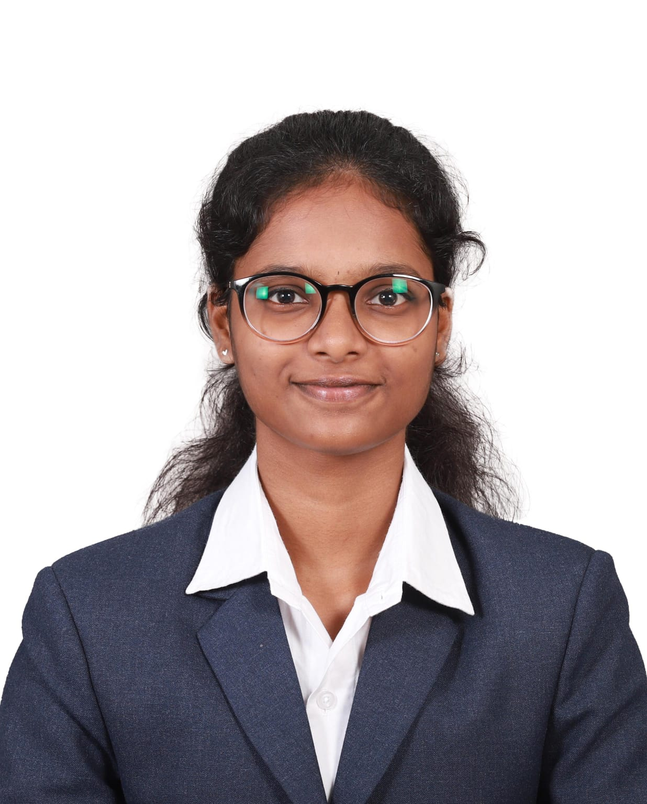

ARTIFICIAL INTELLIGENCE & DATA SCIENCE UNDERGRADUATE
Hello, I'm Kavya Selvaraj.
Aspiring Software Developer
An Artificial Intelligence and Data Science student interested in full-stack development, Python, data analysis, and machine learning.

01 / ABOUT ME
Learning by building.
Growing with every project.
I am pursuing a B.Tech in Artificial Intelligence and Data Science at KPR Institute of Engineering and Technology, Coimbatore. I have practical exposure to full-stack development and data analysis, and enjoy using programming and analytical tools to understand problems and create useful solutions.
My experience includes building basic web application modules, managing and preparing datasets, and visualizing patterns in data. I am keen to keep strengthening my technical skills through hands-on work and collaboration.
8.11CGPA
4Featured projects
10+Event posters designed
02 / TOOLKIT
Skills & technologies
Tools and concepts I have studied or used in my projects and internship experience.
Data analysis
Tools & platforms
Concepts
03 / EXPERIENCE
Where I've learned and contributed.
JAN 2026 — MAR 2026 · 2 MONTHS
Full Stack Developer Intern
TechForge Solutions
- Gained exposure to front-end and back-end technologies through full-stack development training.
- Built two small web application modules with basic front-end interfaces and server-side functionality.
DEC 2025 — JAN 2026 · 1 MONTH
Data Analysis Intern
Maylancer Techios
- Managed product information, descriptions, stock updates and images using WordPress, Excel and Canva.
- Collected, cleaned and organized datasets and supported data collection for the Coimbatorian project.
04 / SELECTED WORK
Projects I've worked on.
A selection of academic and personal projects from my learning journey.
01DATA ANALYSIS
◉
Spotify Trend Analysis
Analyzed a Spotify music dataset to explore popular artists, albums and genres. Cleaned data and created visualizations to identify music streaming trends.
PythonPandasNumPyMatplotlibGoogle Colab
02APPLICATION
✓✓＋
AI Task Manager
Developed an AI-based task manager with add, update, delete and prioritization features, along with task reminders and a user-friendly interface.
PythonAI toolsDatabase
03DATABASE SYSTEM
⌕ Find an item
Lost and Found Management System
Created a system to report and track lost and found items, match reported items and maintain records using a database.
CDatabase
04IOT / HARDWARE
↔
DISTANCE cm
Distance Measurement Using Ultrasonic Sensor
Built a system to measure nearby object distance using ultrasonic waves, with object detection and distance display in centimeters.
ArduinoUltrasonic sensor
05 / LEARNING
Courses & certifications.
Continuously building a foundation across AI, data and programming.
JAN 2026
Introduction to NVIDIA AI Frameworks and Applications
KPR Institute of Engineering and Technology
DEC 2025
Data Analytics
Novi Tech ReD Private Limited
NOV 2025
Data Science with SQL
Edureka
OCT 2025
Responsible and Safe AI Systems
NPTEL Online Certification
JUN 2025
Data Analysis using MS Excel
KPR Institute of Engineering and Technology
MAY 2025
Basics of Python
Infosys Springboard
06 / BEYOND THE CLASSROOM
Activities & recognition.
FIRST PRIZE · 01 AUG 2025
Ignitron Trophy — Poster Designing
Won first prize at KPR Institute of Engineering and Technology for creating a creative and visually impactful poster using Canva.
EVENT ORGANIZATION & DESIGN
Branding Team Designer
Contributed to Nunnarva’25 National Level Symposium and the CICADA’25 National Level Hackathon organizing team. Designed 10+ promotional posters for technical events using Canva.
LanguagesTamil · English
InterestsDance · Editing
07 / CONTACT
Let's connect and create something meaningful.
I'm interested in learning opportunities, internships and collaborations where I can apply my skills and continue growing.
kavyaselvaraj29@gmail.com+91 9363927878Coimbatore, India